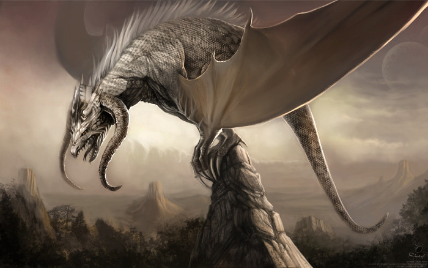
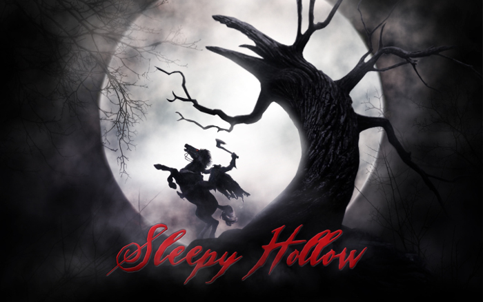
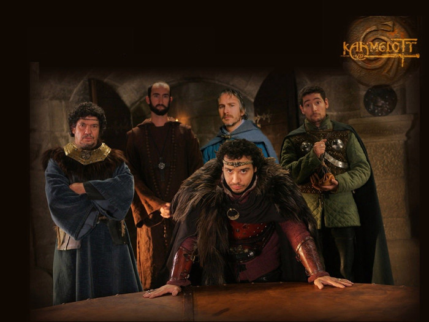
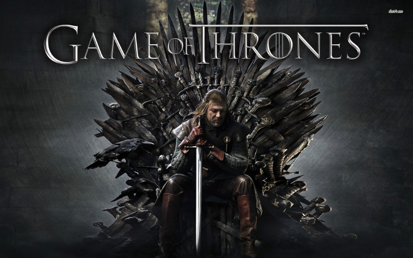
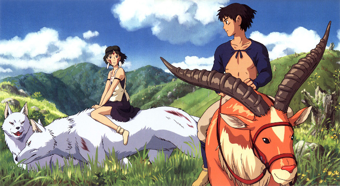
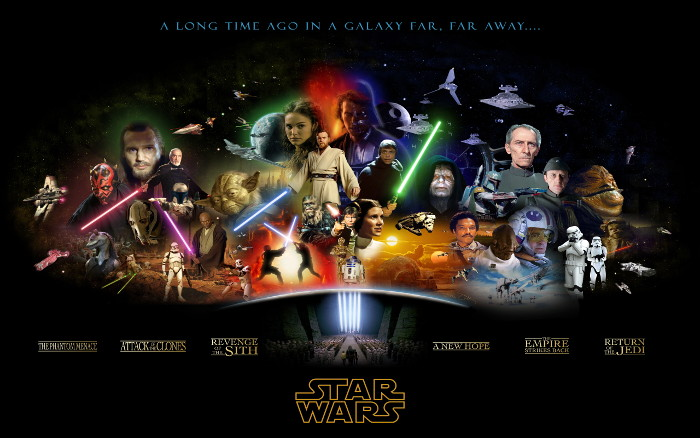
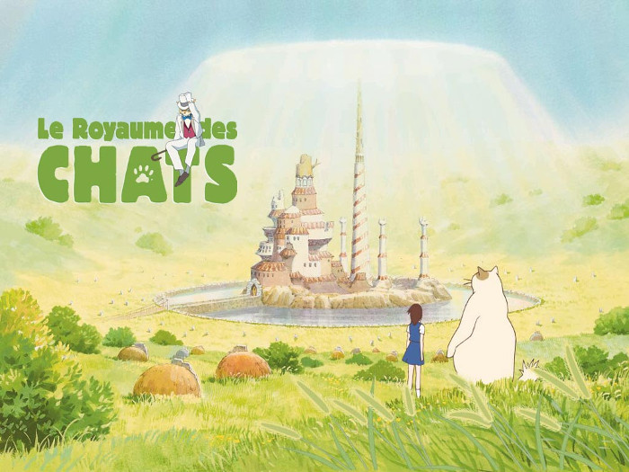
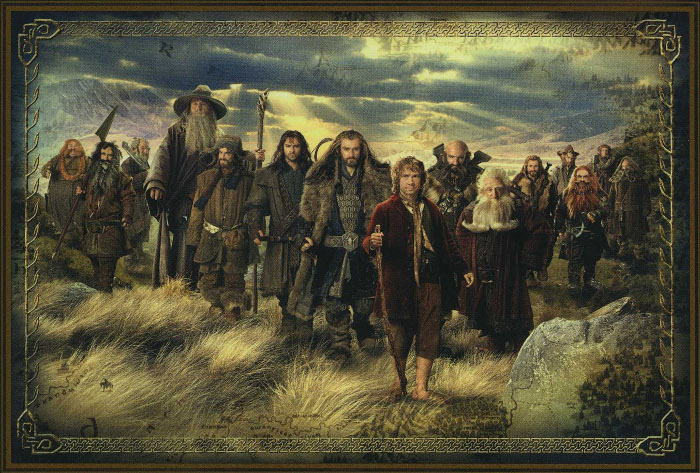
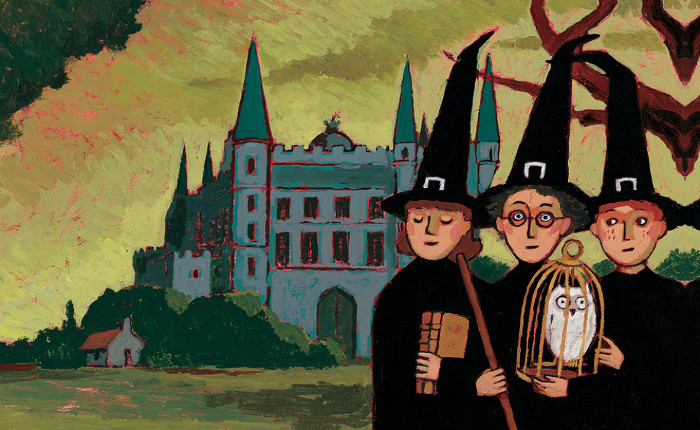
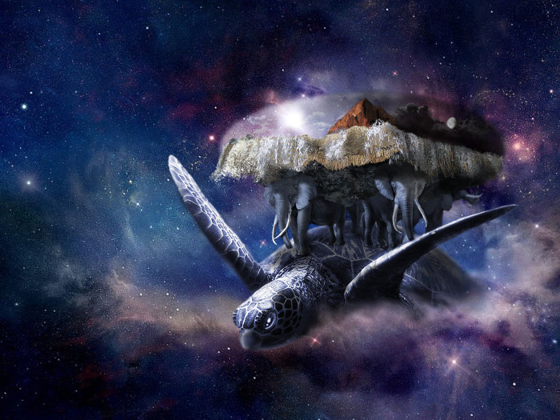

Comment savoir à quel registre appartient mon roman ? 3/4
Dans l’article précédent, nous avons vu qu’il existe deux grands registres littéraires, à savoir le réalisme et la fiction, et que ce dernier peut se diviser en quatre branches.
Nous avons déjà parlé des deux premières : le merveilleux et le fantastique. Nous allons abordé ici la troisième : la fantasy.
Fantasy est un terme anglais qui peut se traduire par imagination. Il n’y a pas de terme français correspondant correctement à la définition de ce registre. « Merveilleux » aurait pu l’illustrer convenablement s’il n’avait pas déjà été attribué à un autre registre quelque peu différent (mais pas tant que ça…). D’ailleurs certains proposent ce terme français pour éviter l’utilisation du terme anglais dans notre langue (Cf. Le Grand dictionnaire terminologique de l’Office québécois de la langue française).
La fantasy se caractérise de manière générale par la présence de surnaturel et l’utilisation de magie dans un monde ou un univers qui l’accepte et dont le fonctionnement peut même en dépendre. On lui attribue une dimension mythique parce qu’il utilise les créatures imaginaires d’anciens mythes et légendes, réarrangées à la sauce des auteurs.
Vous allez me dire : « Dans ce cas, pourquoi la fantasy, ce n’est pas du merveilleux, tout simplement ? »
Le registre fantasy est différent du registre merveilleux parce qu’il ne voit pas toujours revenir les mêmes éléments distinctifs tels que la royauté, les fées et les sorcières, la géographie vague… Dissociés les uns des autres et non rattachés à une époque indéfinie, ils appartiennent à la fantasy.
En effet, il se peut que des récits de fantasy se déroulent dans un monde similaire à celui que nous connaissons, mais il est également possible, et très fréquent, que l’univers du récit soit basé sur notre monde, mais inventé par l’auteur et de manière générale, inconnu du lecteur. Ce n’est pas le cas dans un récit merveilleux dans lequel nous pouvons aisément comprendre le fonctionnement d’une société vaguement définie et qui importe finalement peu pour la compréhension du récit.
Il existe de nombreux sous-genres de fantasy, et il est parfois compliqué de ranger une œuvre dans la bonne catégorie. Encore une fois, l’idée est davantage d’aiguiller le lecteur sur ce qu’il s’apprête à lire sans pour autant coller une étiquette définitive et immuable à l’histoire en lui retirant toute originalité ou mystère.
La fantasy mythique
On y retrouve les codes du conte et du mythe ou des légendes folklores. On parle aussi de fantasy féerique ou de Fairytale Fantasy (fairytale étant le conte de fées en anglais).
Exemple :
Pour les livres, je sèche. Si vous voyez quelque chose qui s’inspire d’une légende ou d’un conte et le retravaille en pure fantasy, je prends !
En film, par contre, on peut parler de Sleepy Hollow de Tim Burton qui s’inspire de La légende de Sleepy Hollow de Washington Irving à laquelle il ajoute une dimension clairement surnaturelle.
En effet, dans le livre, il n’y a ni cavalier sans tête, ni sorcière, seulement des rigolos qui s’amusent avec les citrouilles à Halloween (pour résumer bien sûr) ^^.
La fantasy arthurienne
Ce type de fantasy renvoie à la fantasy historique, mais s’intéresse plus particulièrement à l’époque du Roi Arthur et des chevaliers de la table ronde.
Exemple : la série Kaamelott, écrite par Alexandre Astier.
Le médiéval-fantastique
Le monde imaginé s’inspire principalement du Moyen Âge, notamment pour la conception des armes, l’économie agricole, la féodalité, etc. On retrouve les créatures mythiques fantastiques telles que les nains, les elfes ou les dragons. On peut aussi parler de fantasy épique.
Il s’agit d’un sous-registre qui est apparut principalement pour désigner les jeux de rôles ou les bandes dessinées du registre fantasy, car, aux vues de sa définition, vous aurez compris que le terme fantasy suffit à lui seul pour désigner une œuvre de ce type, bien qu’elles ne se réfèrent pas toutes au Moyen Âge (même si on retrouve souvent des chevaliers, des châteaux forts, etc).
Exemple :
Le Trône de Fer de George R.R. Martin dans lequel les personnages sont clairement tirés d’une époque moyenâgeuse révolue.
Dès l’aube, alors qu’ils se mettaient en route pour assister à l’exécution, un petit froid limpide et sec leur avait dénoncé la fin prochaine de l’été. Ils étaient vingt, et Bran exultait de se trouver des leurs pour la première fois. Enfin, on l’avait jugé d’âge à accompagner le seigneur son père et ses frères et à contempler la justice du roi ! En cette neuvième année d’été, il avait sept ans révolus. À en croire Robb, l’homme qu’on venait de tirer de la petite forteresse nichée au creux des collines était l’un des sauvageons inféodés à Mance Rayder, roi de l’au-delà du Mur.
Rien que dans cet extrait, on nous parle d’exécution, de roi et d’inféodé. Du Moyen Âge pur !
La fantasy historique
Les œuvres de ce registre s’inspirent de faits historiques réels auxquels se mêlent des éléments de fantasy comme la magie ou l’apparition de créatures extraordinaires. Il est possible que le récit se déroule dans un monde imaginaire, mais on y ressent l’inspiration d’une époque et de faits historiques précis.
Exemples :
La saga Percy Jackson de Rick Riordan, qui s’inspire de la mythologie grecque (que je n’ai pas lue, donc je ne peux pas vous en dire plus).
Plus généralement, si on sort de la littérature pour s’intéresser à d’autres médias, on peut aussi mentionner Princesse Mononoke du Studio Ghibli (Hayao Miyasaki, animation japonaise) qui se déroule dans le Japon médiéval.
L’Heroic Fantasy
Ici, l’intrigue tourne autour d’un ou deux personnages qui accomplissent une quête. Il y une notion importante de solitude, car le héros ne fait pas partie d’une compagnie (contrairement aux œuvres de High Fantasy). Le héros doit affronter tous les dangers et ne peut compter que sur lui-même. Souvent, il ne connait même pas suffisamment le monde dans lequel il évolue pour que le lecteur apprenne à le découvrir. Tout ce qui arrive tombe sur le lecteur comme sur le héros. Il peut rencontrer de l’aide, notamment parmi les créatures magiques présentes dans l’univers, mais cette aide n’est pas constante.
Le but du héros est de régler un problème personnel ou qui concerne son village par exemple, et il va pour se faire affronter des monstres et des humains. En effet, le problème vient souvent de l’ingérence de ces derniers.
Exemple :
Le Cycle de Conan le Barbare de Robert E. Howard.
La Space Fantasy
Basée sur le même principe que la science fantasy, la space fantasy regroupe des éléments de science fiction. L’intrigue se déroule souvent dans l’espace, sur plusieurs planètes, tandis qu’on peut retrouver l’influence de contes ou de légendes mythiques, ainsi que des éléments de magie ou des créatures fantastiques.
Le seul exemple que je peux vous fournir serait Star Wars de George Lucas (film) dans lequel toute l’histoire se déroule dans l’espace, à bord de vaisseaux, etc. Tout cela se situe « Il y a bien longtemps, dans une galaxie lointaine » (code du conte). De plus, malgré les technologies usitées par les personnages (vaisseaux, sabres lasers, etc), il existe la Force, cette puissance mystérieuse (et donc magique, relevant de la fantasy) qui influence le bon ou le mauvais côté des gens.
La Science Fantasy
Ce registre est assez flou et peut aussi bien se rencontrer dans la fantasy que dans la science-fiction. En effet, on retrouve des éléments technologiques et scientifiques dans une époque médiévale ou archaïque relative à la fantasy, ou au contraire, des éléments de fantasy (magie, armes de guerre médiévales, créatures mythiques) dans un monde dominé par une technologie avancée.
Exemples :
Les enquêtes d’Hector Krine de Stéphane Tamaillon.
À première vue, on pourrait se dire qu’il s’agit d’un roman réaliste policier, puisque Krine est un enquêteur. Seulement voilà, il est aussi un loup garou…
Nous savons donc d’emblée que cette trilogie ne fait pas partie du registre réaliste, mais relève plutôt de la fiction. On pense d’abord qu’il peut s’agir de littérature fantastique, surtout que les « grouillants » (les membres de l’espèce de Krine et autres créatures surnaturelles) ne sont pas très bien vus par la société. Pas bien vus, mais reconnus. Ils y existent et y vivent de manière complètement ancrée. Il y a certes un refus de la part des personnages, mais pas de la part du lecteur. Nous nous situons donc dans le registre de la fantasy.
Le côté scientifique et technologique se retrouve dans l’univers un peu « steampunk » proposé par l’auteur dans ce vieux Londres victorien de la fin du XIXème siècle.
On pourrait aussi inclure dans cette catégorie Nausicäa de la vallée du vent d’Hayao Miyasaki (manga et film). On y retrouve la technologie avancée, avec les avions, mais aussi une part de magie avec la toute puissance des créatures naturelles qui commandent les Hommes.
La fantasy urbaine
Le cadre du récit est contemporain et principalement urbain. La magie et la technologie se côtoient. Le surnaturel fait irruption dans le monde réel, mais il y est accepté.
Exemples :
Artemis Fowl d’Eoin Colfer appartient à ce registre puisque le monde des fées, que les humains pensent disparu ou inventé depuis longtemps, existe en fait sous terre. Artemis le sait et fait tout pour le découvrir alors qu’il devrait aller à l’école ou s’occuper de sa maman malade.
On peut aussi citer Charlie et la chocolaterie de Roald Dahl dans lequel on retrouve tout l’univers industriel et urbain de la ville alors qu’on se demande comment Willy Wonka peut réaliser de telles confiseries sans magie !
« Très importante, cette salle ! » cria Mr. Wonka. Il sortit de sa poche un trousseau de clefs et en glissa une dans la serrure de la porte. « Ceci est le centre nerveux de toute l’usine, le cœur même de l’affaire ! Et comme elle est belle ! J’attache beaucoup d’importance à la beauté de mes salles ! Je ne tolère pas la laideur dans une usine ! Et voilà, nous entrons ! Mais soyez prudents, mes petits amis ! Ne perdez pas la tête ! Ne vous excitez pas trop ! Gardez votre sang-froid ! » Mr. Wonka ouvrit la porte. Les cinq enfants et les neuf adultes entrèrent en se bousculant… pour tomber en arrêt devant tant de merveilles. Oh ! Quel fascinant spectacle ! À leurs pieds s’étalait… une jolie vallée. De chaque côté, il y avait de verts pâturages et tout au fond coulait une grande rivière brune. Mais on voyait aussi une formidable cascade – une falaise abrupte par où les masses d’eau pleines de remous se précipitaient dans la rivière, formant un rideau compact, finissant en un tourbillon écumant et bouillonnant, plein de mousse et d’embruns.
Rien que dans cet extrait on parle d’usine dans laquelle il y a une véritable vallée en chocolat avec rivière et cascade ! Incroyable !
La fantasy animalière
Dans ce registre, les personnages principaux sont des animaux anthropomorphisés (c’est-à-dire qu’ils parlent comme des humains et leur empruntent des habitudes ou des manières spécifiques comme dormir dans un lit par exemple).
Exemples :
Il était une fois quatre petits lapins. Ils s’appelaient Flopsy, Mopsy, Dropsy et Pierre. Ils vivaient avec leur Maman dans un talus sableux sous les racines d’un grand sapin. « Mes chers petits, dit un matin la vieille Maman Lapin, vous pouvez aller dans les champs ou descendre le chemin, mais n’allez surtout pas dans le jardin du paysan Poupon ! Votre père y a eu un accident et a fini dans un pâté en croute de la paysanne Poupon ! Je dois sortir. Allez maintenant, et ne faites pas de bêtises ! » Madame Lapin prit son panier et son ombrelle et partit à travers bois. Chez le boulanger, elle acheta une miche de pain de mie et cinq gâteaux aux groseilles.
On peut aussi parler du Royaume des chats du Studio Ghibli (film d’animation) où une jeune fille se transforme en chat et se retrouve dans un monde étrange où tous les habitants sont des chats qui parlent (“Miademoiselle !”).
La High Fantasy
L’histoire se déroule exclusivement dans l’univers imaginé par l’auteur. Le monde inventé est organisé et structuré, les peuples sont distincts les uns des autres et la géographie, sans être inconnue, est centrée sur ce nouveau monde et d’une grande importance pour l’intrigue.
Exemples très connus et parfaitement compréhensibles de ce type de récits :
Le Hobbit, Le Seigneur des Anneaux, Le Silmarillion, Les Enfants de Húrin (et autres œuvres) de J.R.R. Tolkien, dont les histoires se déroulent en Terre du Milieu, univers intégralement inventé par l’auteur avec ses langues, ses différentes créatures et leurs coutumes, etc.
Dans un trou vivait un hobbit. Ce n’était pas un trou déplaisant, sale et humide, rempli de bouts de vers et d’une atmosphère suintante, non plus qu’un trou sec, nu, sablonneux, sans rien pour s’asseoir ni sur quoi manger: c’était un trou de hobbit, ce qui implique le confort. Il avait une porte tout à fait ronde comme un hublot, peinte en vert, avec un bouton de cuivre jaune bien brillant, exactement au centre. Cette porte ouvrait sur un vestibule en forme de tube, comme un tunnel: un tunnel très confortable, sans fumée, aux murs lambrissés, au sol dallé et garni de tapis ; il était meublé de chaises cirées et de quantité de patères pour les chapeaux et les manteaux - le hobbit aimait les visites. Le tunnel s’enfonçait assez loin, mais pas tout à fait en droite ligne, dans le flanc de la Colline, comme tout le monde l’appelait à des lieues alentour - et l’on y voyait maintes petites portes rondes, d’abord d’un côté, puis sur un autre. Le hobbit n’avait pas d’étages à grimper: chambres, salles de bains, caves, réserves (celles-ci nombreuses), penderies (il avait des pièces entières consacrées aux vêtements), cuisines, salles à manger, tout était de plain-pied, et, en fait, dans le même couloir. Les meilleures chambres se trouvaient toutes sur la gauche (en entrant), car elles étaient les seules à avoir des fenêtres, des fenêtres circulaires et profondes, donnant sur le jardin et les prairies qui descendaient au-delà jusqu’à la rivière.
On voit ici que les hobbits vivent dans des maisons particulières, qu’ils ont leurs propres coutumes, etc.
La Low Fantasy
Dans ce type de fantasy, l’histoire se déroule également dans un monde imaginaire, mais il est en relation avec le monde que nous connaissons, si bien que tout n’est pas inventé par l’auteur qui reprend une part de réalité pour écrire son récit.
Exemples :
Il faisait presque noir, là-dedans, et elle gardait les bras tendus devant elle afin de ne pas se cogner la figure contre le fond de l’armoire. […] Un instant plus tard, elle nota que ce qui effleurait son visage et ses mains n’était plus de la douce fourrure, mais quelque chose de dur, de rugueux et même de piquant. — Tiens ! On dirait des branches d’arbre ! s’exclama Lucy. Puis elle vit qu’il y avait une lumière devant elle ; non pas à quelques centimètres, là où le fond de l’armoire aurait dû se trouver, mais très loin. Quelque chose de froid et de doux tombait sur elle. Elle découvrit alors qu’elle se trouvait au milieu d’un bois, la nuit, avec de la neige sous ses pieds et des flocons qui descendaient du ciel.
Dans ce pavé, Narnia est un monde imaginaire dans lequel un lion (entre autres) parle. Cela relève donc du surnaturel ^^. En plus, il y a une sorcière !
Par ailleurs, les personnages principaux vivent dans notre monde, dans une Angleterre en pleine guerre (seconde guerre mondiale il me semble), et dans cette histoire (qui est la plus connue parce qu’elle a été la première à être adaptée au cinéma), les enfants arrivent à Narnia en passant par le fond d’une vieille armoire. Cela crée un lien « concret » entre les deux mondes, bien que ce qui les relie vraiment soit l’identité des personnages et leurs rôles respectifs.
Illustration représentant Ron, Harry et Hermione devant le collège Poudlard avec leur cape de sorciers et leur baguette magique.
La saga Harry Potter de J.K. Rowling (je ne vais pas vous mettre d’extrait ici) fait aussi partie de ce registre.
Pour résumer, Harry vit dans la banlieue londonienne chez sa famille qui ne possède aucun don magique et pendant l’année scolaire, il va au collège de sorcellerie dissimulé par magie au fin fond du Nord de l’Angleterre.
On peut aussi citer dans cet esprit La quête d’Ewilan de Pierre Bottero ou encore Oksa Pollock de Anne Plichota et Cendrine Wolf, je vous laisse les découvrir.
La Light Fantasy
Dans ce registre, on retrouve tous les critères qui font d’une œuvre une œuvre de fantasy, mais elle est tournée au ridicule ou en dérision avec une utilisation prédominante de l’humour qui casse les codes.
Exemples :
Les Annales du Disque Monde de Terry Pratchett.
Sur fond d’immensité étoilée passe une tortue portant quatre éléphants sur sa carapace. Tortue comme éléphants sont plus grands qu’on ne l’imagine, mais au milieu des étoiles la différence entre immense et minuscule est relativement dérisoire. Cette tortue et ces éléphants sont pourtant, selon les normes des tortues et des éléphants, franchement grands. Ils soutiennent le Disque-monde et ses vastes continents, formations nuageuses et océans.
On plonge directement dans la fantasy avec cette tortue géante qui se balade comme ça dans l’univers, portant un monde sur le dos. Et en plus, c’est très drôle !
On peut aussi parler du Donjon de Naheulbeuk (BD) de John Lang et Marion Poinsot où une compagnie très hétéroclite (nain, elfe, troll et j’en passe) part accomplir une quête dans un donjon. À vous de découvrir !
La Dark Fantasy
On parle aussi, évidemment, de « fantasy noire ». L’ambiance de l’histoire est sombre et étouffante et on comprend clairement que la Mal a triomphé du Bien et que les personnages sont au bout du rouleau. Le lecteur est autant oppressé qu’eux et il se laisse enveloppé par une dimension d’horreur psychologique à combattre.
Exemple :
On peut de nouveau citer ici Le Trône de fer de George R.R. Martin, tout simplement parce que la moitié des personnages est tuée par quelque chose d’horrible dans chacun des tomes de la saga et que ceux qui survivent sont pourris jusqu’à la moelle par un pouvoir maléfique qui les pousse sans cesse à vouloir dominer en écrasant les autres. En gros…
Voilà, c’est fini pour la fantasy. C’était dur, je sais, mais maintenant, c’est plus clair. N’est-ce pas ? Rendez-vous dans le prochain article de cette série pour parler de la science-fiction !
Crédits des images:
- « Le dragon » par David REVOY, via Wikimedia Commons
- « The Great A’Tuin » par Pumpkindate, via deviantart